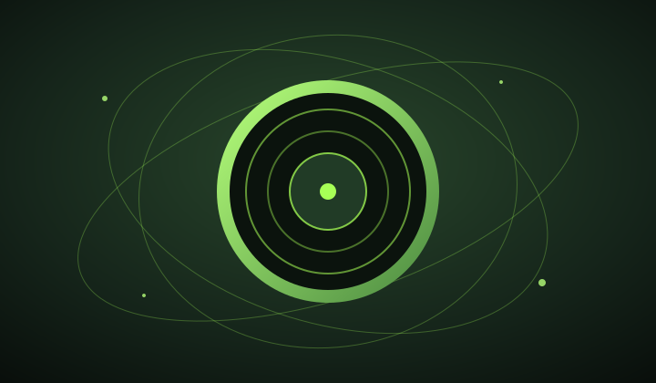
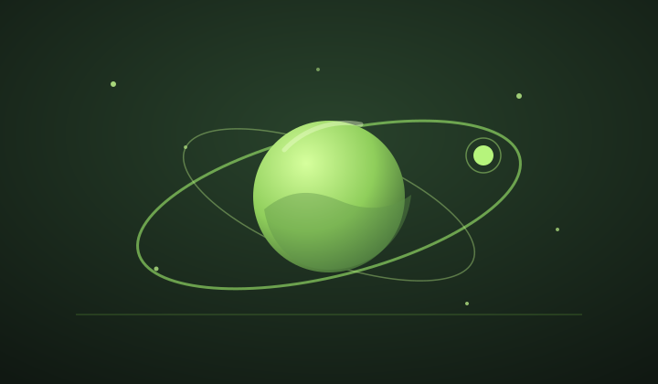

Música · Bucaramanga
Bucaramanga Sounds System
Sitio estático desarrollado con HTML y CSS para un colectivo de música electrónica, con identidad, agenda, contenido sonoro y contacto.
Visitar sitioTrabajo destacado / 02
Proyectos web y experiencias digitales desarrolladas para distintos públicos y necesidades.

Música · Bucaramanga
Sitio estático desarrollado con HTML y CSS para un colectivo de música electrónica, con identidad, agenda, contenido sonoro y contacto.
Visitar sitio
Proyecto web · Anvar Space
Sitio web de Anvar Space publicado en línea.
Visitar Anvar SpaceProyecto web · Comercio electrónico
Sitio web de EcoMarket publicado en línea.
Visitar EcoMarket